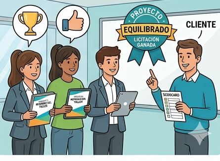

Producto Final: La licitación

¿Qué vamos a hacer?
Ha llegado el momento de la verdad. Vais a actuar como una empresa de reformas que compite por ganar el contrato de renovación del aula taller. No solo habéis medido y dibujado; ahora tenéis que convencer al "cliente" (el profesor y el resto de la clase) de que vuestro presupuesto es el más preciso y vuestra propuesta la más profesional.
El objetivo es presentar vuestro Dossier Técnico completo y defender vuestras decisiones ante el grupo.
Organización
Tiempo: 2 h (1 h para organizar el portfolio y 1 h para las presentaciones).
Trabajo: Equipo cooperativo.
Lugar: Pizarra digital con conexión a internet.
Paso a paso
1. Preparación del Portfolio Digital
Antes de salir a escena, debemos tener "la maleta" lista. Debes subir a Google Classroom un único archivo (o carpeta organizada) que contenga:
El Plano Digital: Captura de pantalla o exportación de tu diseño en Floorplanner.
La hoja de cálculo de la factura.
La ficha "Muestrario de baldosas" con todos los cálculos realizados.
Las fichas de trabajo con todas las tareas realizadas.
Memoria de Calidades: Una breve lista explicando los materiales elegidos para la reforma.
2. La Puesta en Escena (La Presentación)
Cada "empresa" tendrá 10 minutos para exponer.
Seguid este orden:
Presentación: Quiénes sois y nombre de vuestra propuesta.
El Diseño: Proyecta tu plano de Floorplanner. Explica los cálculos que has tenido que realizar para la reforma sobre dicho plano.
Los Números: Muestra la factura final y la ficha Muestrario de baldosas con todos los cálculos realizados. Muestra los campos calculados incluidos en la factura. ¿Cuánto nos va a costar la reforma?
Cierre: ¿Por qué vuestro proyecto es el mejor?
3. Evaluación Cruzada
Mientras tus compañeros presentan, tú serás parte del "tribunal". Usarás una lista de cotejo rápida para valorar si los otros proyectos son realistas y claros.
¿Qué vamos a aprender?
A comunicar ideas técnicas de forma clara y sin nervios.
A utilizar herramientas de presentación.
Tu rol como Jefe de Proyecto
Hoy dejáis de ser alumnos para ser los responsables de vuestra empresa, cada uno de vosotros deberá intervenir para exponer una parte del proyecto. Para desempeñar bien vuestro rol durante la presentación tendréis que actuar como:
Portavoz: Habla con claridad, mirando al público y no solo a la pantalla.
Estratega: Prepárate para las preguntas. ¿Qué pasa si el presupuesto es muy alto? ¿Por qué elegiste ese tipo de suelo?
Material que vais a usar
Pizarra digital y ordenador de aula.
Portfolio en Google Classroom (lista de cotejo).
Rúbrica de evaluación (para saber qué puntos se valoran más).
Puntero o ratón inalámbrico (opcional, para moverte por el plano mientras hablas).
Si surge algún problema…
¿Me he quedado en blanco? Mira tu plano; él te dirá qué contar. Habla sobre las medidas y las puertas, es lo que mejor conoces.
¿El archivo no carga? Ten siempre una copia en un pendrive o una captura de pantalla en el móvil como "Plan B".
¿Alguien pregunta algo que no sé? Sé honesto: "Es un punto que podemos revisar en el presupuesto detallado, pero nos hemos basado en la normativa estándar". ¡Salida profesional!
El Ganador: El proyecto que obtenga la mayor puntuación sumando la valoración de la rúbrica, la lista de cotejo y la calidad de esta presentación, será el "Adjudicatario de la Obra".